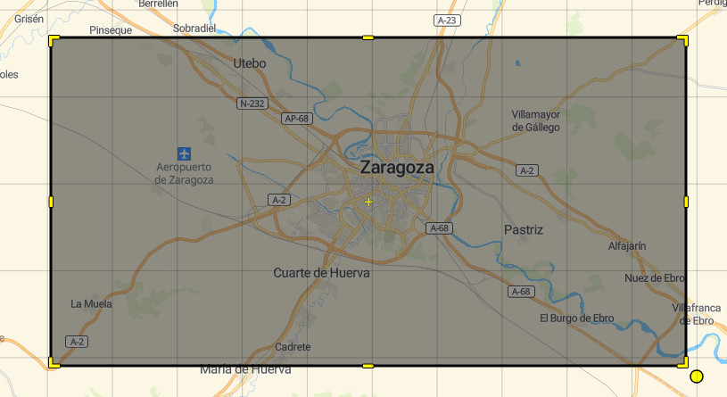

geocodificacion_convencional
La geocodificación convencional es el proceso de localización de una dirección junto con las coordenadas geográficas de su ubicación.
Construcción de la consulta
El formato de interrogación a la API se construye a partir de la url de referencia para el método elegido, seguido del signo ? y de la secuencia de parámetros que configuran la pregunta separados por el signo &.
Si se desea localizar una dirección que contenta un texto determinado, que es el caso más común, el parámetro a utilizar es text:
| Parámetro | significado | Tipo | Requerido | Defecto | Ejemplo |
|---|---|---|---|---|---|
text |
texto de la dirección a buscar | string | yes | none | Calle Mayor |
En el ejemplo siguiente el texto a buscar en la dirección es «murrieta», para lo cual se añade a la url del método de geolocalización convencional https://geocoder-5-ign.larioja.org/v1/search, el signo '?y el parámetrotext=murrieta`.
https://geocoder-5-ign.larioja.org/v1/search?text=murrieta
Pulsando sobre el enlace anterior se obtiene un fichero en formato GoeJSON que contiene los resultados de la búsqueda que mejor coinciden con el texto murrieta. El fichero con formato GeoJSON puede ser leído en un navegador web (1) o en un procesador de texto.
En este caso los resultados obtenidos son los siguientes:
BARRIO MURRIETA, Putxeta, Bizkaia, España (-3.091738,43.319819)
CALLE MURRIETA, San Vicente de Barakaldo/San Bizenti-Barakaldo, Bizkaia, España (-2.989928,43.301062)
Calle Marqués de Murrieta, Logroño, La Rioja, España (-2.452761,42.465614)
Configurar el número de resultados
Por defecto la API devuelve hasta 10 resultados. Si se desea un número distinto de resultados se puede configurar en la llamada utilizando el parámetro size.
| Parámetro | significado | Tipo | Requerido | Defecto | Ejemplo |
|---|---|---|---|---|---|
size |
número deseado de resultados | integer | no | 10 | 5 |
Si en el ejemplo anterior se deseara recibir solamente un único resultado, la sintaxis de la consulta debería ser:
https://geocoder-5-ign.larioja.org/v1/search?text=murrieta&size=1
siendo el resultado obtenido:
BARRIO MURRIETA, Putxeta, Bizkaia, España (-3.091738,43.319819)
Consulta en un área determinada
Es posible constreñir la búsqueda de direcciones a una región o país en particular, o limitarla a un área específica. La API Pelias que utiliza el geocodificador permite tres fórmulas para limitar espacialmente la búsqueda: país, rectángulo y círculo.
Búsqueda por países
En ocasiones puede ser necesario que los resultados de una búsqueda correspondan a uno o varios países en particular. Para hacer esto, es necesario establecer el valor del parámetro `boundary.country´ mediante una lista separada por comas de códigos de país alpha-2 o alpha-3 ISO-3166 country code, si bien en este caso, dicha búsqueda por paises no tendría mucho sentido ya que el geocodificador solamente contiene información de las direcciones de España
| Parámetro | significado | Tipo | Requerido | Defecto | Ejemplo |
|---|---|---|---|---|---|
boundary.country |
listado de países separados por comas, codificados según alpha-2 o alpha-3 ISO-3166 country code | string | no | none |
Búsqueda en un área rectangular
Para limitar la búsqueda a un área rectangular es necesario conocer las coordenadas de latitud y longitud máximas y mínimas que definen el rectángulo (2).
En este caso los parámetros a utilizar son los siguientes:
| Parámetro | significado | Tipo | Requerido | Defecto | Ejemplo |
|---|---|---|---|---|---|
boundary.rect.max_lat |
valor máximo de la latitud utilizado en la búsqueda en una región rectangular | floating point number | no | none | 35.81346 |
boundary.rect.max_lon |
valor máximo de la longitud utilizado en la búsqueda en una región rectangular | floating point number | no | none | 140.1471 |
boundary.rect.min_lat |
valor mínimo de la latitud utilizado en la búsqueda en una región rectangular | floating point number | no | none | 35.53308 |
boundary.rect.min_lon |
valor mínimo de la longitud utilizado en la búsqueda en una región rectangular | floating point number | no | none | 139.2794 |
Por ejemplo, para encontrar una dirección con texto "mayor" dentro de un área rectangular en el entorno de la ciudad de Zaragoza, cuyo rectángulo está comprendido por las siguiente coordenadas (lon_min,lat_min,lon_max,lat_max):-1.1474,41.5453,-0.6585,41.7342

la sintaxis a utilizar sería:
siendo estos los resultados obtenidos:
CALLE MAYOR, La Muela, Zaragoza, España (1.117274,41.57985)
CALLE MAYOR (MONTAÑANA), MONTAÑANA, Zaragoza, España (-0.822357,41.684245)
CALLE OSA MAYOR, Zaragoza, España (0.932542,41.639184)
(1) Se aconseja implementar en el navegador web un complemento para la visualización estructurada de ficheros JSON.
(2) Puede buscar un cuadro delimitador para una región conocida con esta herramienta web.